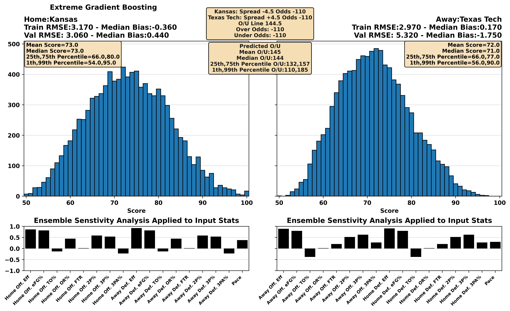
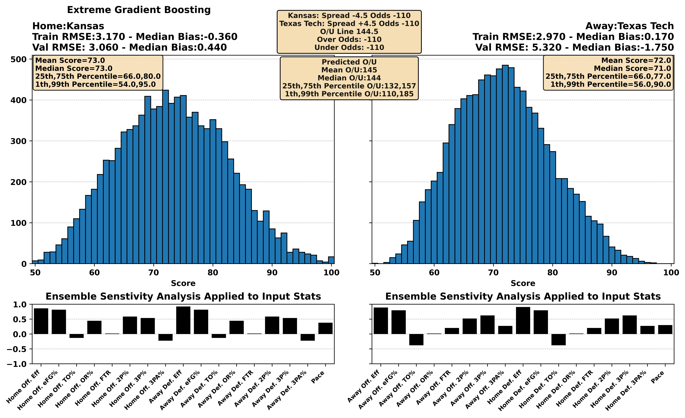
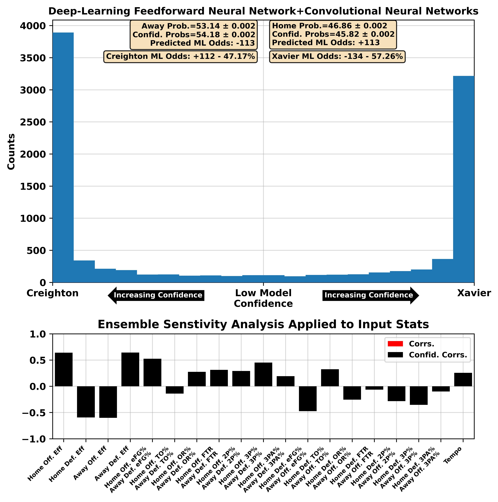
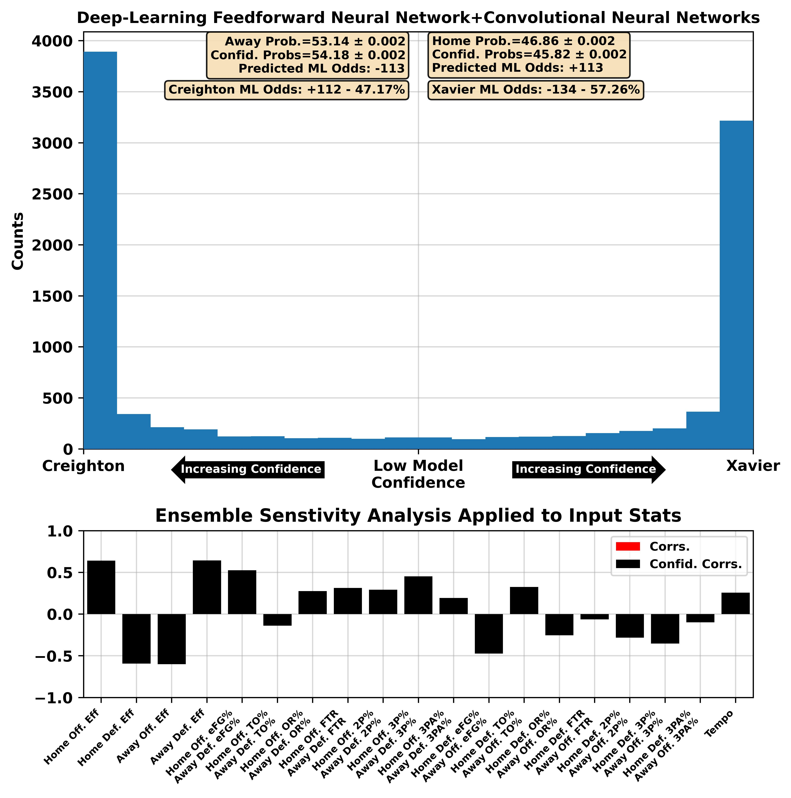

| BART Torvik Prediction | 01:30 PM 16 Kentucky at 40 Vanderbilt ESPN | Kentucky -1.3, 86-85 (54%) |


| BART Torvik Prediction | 05:30 PM 1 Houston at 11 Kansas ESPN | Houston -5.2, 63-58 (73%) |


| BART Torvik Prediction | 07:30 PM 6 Tennessee at 2 Auburn ESPN | Auburn -9.9, 76-66 (83%) |


| BART Torvik Prediction | 05:00 PM 23 Mississippi at 24 Missouri SEC Network | Missouri -3.6, 73-70 (64%) |


 

| BART Torvik Prediction | 07:00 PM 35 Connecticut at 54 Xavier FOX | Xavier -0.9, 74-73 (53%) |


| BART Torvik Prediction | 07:30 PM 50 Oklahoma at 58 Arkansas ESPN2 | Arkansas -2.6, 76-74 (60%) |
 



| BART Torvik Prediction | 03:30 PM 31 Baylor at 77 Utah ESPN2 | Baylor -2.4, 73-70 (59%) |


| BART Torvik Prediction | 01:00 PM 4 Iowa St. at 61 Arizona St. ESPN+ | Iowa St. -7.3, 76-69 (76%) |


| BART Torvik Prediction | 03:00 PM 60 TCU at 74 UCF ESPN+ | UCF -2.5, 74-71 (60%) |


| BART Torvik Prediction | 02:30 PM 33 Georgia at 7 Florida SEC Network | Florida -10.2, 77-67 (84%) |


| BART Torvik Prediction | 03:30 PM 3 Duke at 85 Wake Forest ESPN | Duke -12.2, 71-59 (90%) |


| BART Torvik Prediction | 07:30 PM 79 LSU at 5 Alabama SEC Network | Alabama -18.9, 92-73 (93%) |


| BART Torvik Prediction | 12:30 PM 14 Michigan St. at 88 Rutgers CBS | Michigan St. -7.0, 80-73 (74%) |


| BART Torvik Prediction | 03:00 PM 30 Oregon at 94 Minnesota BTN | Oregon -4.1, 69-65 (67%) |